4. Application exemple – 02 : rdvmedecins-jsf2-spring
Nous nous proposons maintenant de porter l'application précédente dans un environnement Spring / Tomcat :
 |
Il s'agit réellement d'un portage. Nous allons partir de l'application précédente et l'adapter au nouvel environnement. Nous ne commenterons que les modifications. Elles sont de trois ordres :
- le serveur n'est plus Glassfish mais Tomcat, un serveur léger qui n'a pas de conteneur EJB,
- pour remplacer les EJB, on utilisera Spring, le concurrent principal des EJB [http://www.springsource.com/],
- l'implémentation JPA utilisée sera Hibernate à la place d'EclipseLink.
Parce que nous allons beaucoup procéder par copier / coller entre l'ancien projet et le nouveau, nous gardons les précédents projets ouverts dans Netbeans :
 |
L'utilisation du framework Spring nécessite certaines connaissances qu'on trouvera dans [ref7] (cf page 166).
4.1. Les couches [DAO] et [JPA]
 |
4.1.1. Le projet Netbeans
Nous construisons un projet Maven de type [Java Application] :
 |  |  |
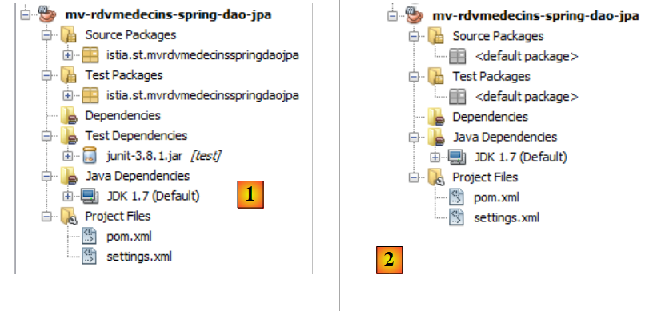 |
- en [1], le projet créé,
- en [2], le même débarrassé des packages de [Source Packages] et [Test Packages] et de la dépendance [junit-3.8.1].
Le plus difficile dans les projets Maven est de trouver les bonnes dépendances. Pour ce projet Spring / JPA / Hibernate, ce sont les suivantes :
<project xmlns="http://maven.apache.org/POM/4.0.0" xmlns:xsi="http://www.w3.org/2001/XMLSchema-instance"
xsi:schemaLocation="http://maven.apache.org/POM/4.0.0 http://maven.apache.org/xsd/maven-4.0.0.xsd">
<modelVersion>4.0.0</modelVersion>
<groupId>istia.st</groupId>
<artifactId>mv-rdvmedecins-spring-dao-jpa</artifactId>
<version>1.0-SNAPSHOT</version>
<packaging>jar</packaging>
<name>mv-rdvmedecins-spring-dao-jpa</name>
<url>http://maven.apache.org</url>
<properties>
<project.build.sourceEncoding>UTF-8</project.build.sourceEncoding>
</properties>
<dependencies>
<dependency>
<groupId>org.hibernate</groupId>
<artifactId>hibernate-entitymanager</artifactId>
<version>4.1.2</version>
<type>jar</type>
</dependency>
<dependency>
<groupId>org.hibernate.java-persistence</groupId>
<artifactId>jpa-api</artifactId>
<version>2.0.Beta-20090815</version>
<type>jar</type>
</dependency>
<dependency>
<groupId>mysql</groupId>
<artifactId>mysql-connector-java</artifactId>
<version>5.1.6</version>
</dependency>
<dependency>
<groupId>junit</groupId>
<artifactId>junit</artifactId>
<version>4.10</version>
<scope>test</scope>
<type>jar</type>
</dependency>
<dependency>
<groupId>commons-dbcp</groupId>
<artifactId>commons-dbcp</artifactId>
<version>1.2.2</version>
</dependency>
<dependency>
<groupId>commons-pool</groupId>
<artifactId>commons-pool</artifactId>
<version>1.6</version>
</dependency>
<dependency>
<groupId>org.springframework</groupId>
<artifactId>spring-tx</artifactId>
<version>3.1.1.RELEASE</version>
<type>jar</type>
</dependency>
<dependency>
<groupId>org.springframework</groupId>
<artifactId>spring-beans</artifactId>
<version>3.1.1.RELEASE</version>
<type>jar</type>
</dependency>
<dependency>
<groupId>org.springframework</groupId>
<artifactId>spring-context</artifactId>
<version>3.1.1.RELEASE</version>
<type>jar</type>
</dependency>
<dependency>
<groupId>org.springframework</groupId>
<artifactId>spring-orm</artifactId>
<version>3.1.1.RELEASE</version>
<type>jar</type>
</dependency>
</dependencies>
</project>
- lignes 18-29 : pour Hibernate,
- lignes 30-34 : pour le pilote JDBC de MySQL,
- lignes 35-41 : pour le test JUnit,
- lignes 42-51 : pour le pool de connexions Apache Commons DBCP. Un pool de connexions est un pool de connexions ouvertes. Lorsque l'application a besoin d'une connexion, il la demande au pool. Lorsqu'il n'en a plus besoin il la rend. Les connexions sont ouvertes au démarrage de l'application et le restent durant de la vie de l'application. Cela évite le coût d'ouvertures / fermetures répétées des connexions. Ce type de pool existait dans Glassfish mais son utilisation a été transparente pour nous. Ce sera également le cas ici mais il nous faut l'installer et le configurer,
- lignes 52-75 : pour Spring.
Ajoutons ces dépendances et construisons le projet :
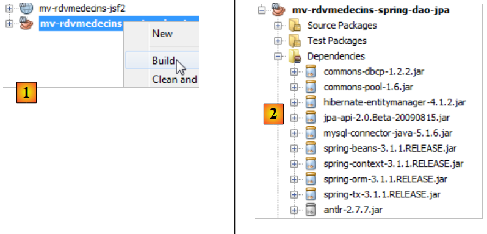 |
- en [1], on construit le projet ce qui va forcer Maven à télécharger les dépendances,
- en [2], celles-ci apparaissent alors dans la branche [Dependencies]. Elles sont très nombreuses, les frameworks Hibernate et Spring ayant eux-mêmes de très nombreuses dépendances. Là encore, grâce à Maven, nous n'avons pas à nous préoccuper de ces dernières. Elles sont téléchargées automatiquement.
Maintenant que nous avons les dépendances, nous collons le code du projet EJB de la couche [dao] dans le projet Spring de la couche [dao] :
 |
- en [1], on copie dans le projet source,
- en [2], on colle dans le projet destination,
- en [3], le résultat.
Une fois la copie effectuée, il faut corriger les erreurs.
4.1.2. Le paquetage [exceptions]
 |
La classe [RdvMedecinsExceptions] [1] a des erreurs à cause du paquetage [javax] ligne 4 qui n'existe plus. C'est un paquetage propre aux EJB. L'erreur de la ligne 6 dérive de celle de la ligne 4. On supprime ces deux lignes. Cela supprime les erreurs [2].
4.1.3. Le paquetage [jpa]
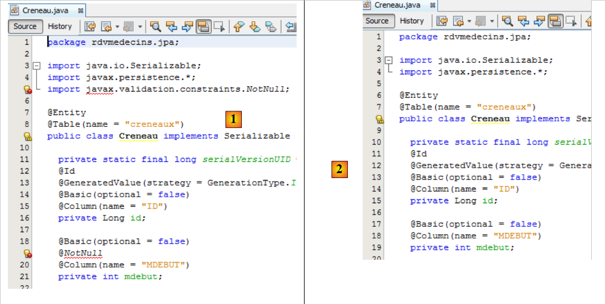 |
- en [1], la classe [Creneau] est erronée à cause de l'absence du paquetage de validation de la ligne [5]. On aurait pu ajouter ce paquetage dans les dépendances du projet. Mais aux tests, Hibernate lance une exception à cause de lui. Comme il n'est pas indispensable à notre application, nous l'avons enlevé. Pour corriger la classe, il suffit de supprimer toutes les lignes erronées [2]. On fait cela pour toutes les classes erronées.
4.1.4. Le paquetage [dao]
Nous en sommes au point suivant :
 |
- en [1], les deux paquetages corrigés,
- en [2], le paquetage [dao]. Comme il n'y a plus d'EJB, il n'y a plus non plus la notion d'interface distante et locale de l'EJB. Nous les supprimons [3].
 |
- en [1], les erreurs de la classe [DaoJpa] ont deux origines :
- l'importation d'un paquetage lié aux EJB (lignes 6-8) ;
- l'utilisation des interfaces locale et distante que nous venons de supprimer.
Nous supprimons les lignes erronées et utilisons l'interface [IDao] à la place des interfaces locale et distante [2].
 |
Dans le projet EJB, la classe [DaoJpa] était un singleton et ses méthodes s'exécutaient au sein d'une transaction. Nous verrons que la classe [DaoJpa] va être un bean géré par Spring. Par défaut tout bean Spring est un singleton. Voilà pour la première propriété. La seconde est obtenue avec l'annotation @Transactional de Spring [3] :
 |
Ceci fait, le projet ne présente plus d'erreurs [4].
4.1.5. Configuration de la couche [JPA]
Dans le projet EJB, nous avions configuré la couche [JPA] avec le fichier [persistence.xml]. Nous avons ici une couche [JPA] et donc nous devons créer ce fichier. Dans le projet EJB, nous l'avions généré avec Glassfish. Ici, nous le construisons à la main. La raison principale en est qu'une partie de la configuration du fichier [persistence.xml] migre dans le fichier de configuration de Spring lui-même.
Nous créons le fichier [persistence.xml] :
 |
avec le contenu suivant :
<?xml version="1.0" encoding="UTF-8"?>
<persistence version="2.0" xmlns="http://java.sun.com/xml/ns/persistence" xmlns:xsi="http://www.w3.org/2001/XMLSchema-instance" xsi:schemaLocation="http://java.sun.com/xml/ns/persistence http://java.sun.com/xml/ns/persistence/persistence_2_0.xsd">
<persistence-unit name="spring-dao-jpa-hibernate-mysqlPU" transaction-type="RESOURCE_LOCAL">
<class>rdvmedecins.jpa.Client</class>
<class>rdvmedecins.jpa.Creneau</class>
<class>rdvmedecins.jpa.Medecin</class>
<class>rdvmedecins.jpa.Rv</class>
</persistence-unit>
</persistence>
- ligne 3 : on donne un nom à l'unité de persistance,
- ligne 3 : le type des transactions est RESOURCE_LOCAL. Dans le projet EJB, c'était JTA pour indiquer que les transactions étaient gérées par le conteneur EJB. La valeur RESOURCE_LOCAL indique que l'application gère elle-même ses transactions. Ce sera le cas ici au travers de Spring,
- lignes 4-7 : les noms complets des quatre entités JPA. C'est facultatif car Hibernate les cherche automatiquement dans le ClassPath du projet.
C'est tout. Le nom du provider JPA, ses propriétés, les caractéristiques JDBC de la source de données sont désormais dans le fichier de configuration de Spring.
4.1.6. Le fichier de configuration de Spring
Nous avons dit que la classe [DaoJpa] était un bean géré par Spring. Cela se fait au moyen d'un fichier de configuration. Ce fichier va comporter également la configuration de l'accès à la base de données ainsi que la gestion des transactions. Il doit être dans le ClassPath du projet. Nous le mettons dans la branche [Other sources] :
 |
Le fichier [spring-config-dao.xml] est le suivant :
<?xml version="1.0" encoding="UTF-8"?>
<beans xmlns="http://www.springframework.org/schema/beans" xmlns:xsi="http://www.w3.org/2001/XMLSchema-instance"
xmlns:tx="http://www.springframework.org/schema/tx"
xsi:schemaLocation="http://www.springframework.org/schema/beans http://www.springframework.org/schema/beans/spring-beans-2.0.xsd http://www.springframework.org/schema/tx http://www.springframework.org/schema/tx/spring-tx-2.0.xsd">
<!-- couches applicatives -->
<bean id="dao" class=" " />
<!-- EntityManagerFactory -->
<bean id="entityManagerFactory" class="org.springframework.orm.jpa.LocalContainerEntityManagerFactoryBean">
<property name="dataSource" ref="dataSource" />
<property name="jpaVendorAdapter">
<bean class="org.springframework.orm.jpa.vendor.HibernateJpaVendorAdapter">
<property name="databasePlatform" value="org.hibernate.dialect.MySQL5InnoDBDialect" />
<!--
<property name="showSql" value="true" />
<property name="generateDdl" value="true" />
-->
</bean>
</property>
</bean>
<!-- la source de donnéees DBCP -->
<bean id="dataSource" class="org.apache.commons.dbcp.BasicDataSource" destroy-method="close">
<property name="driverClassName" value="com.mysql.jdbc.Driver" />
<property name="url" value="jdbc:mysql://localhost:3306/dbrdvmedecins2" />
<property name="username" value="root" />
<property name="password" value="" />
</bean>
<!-- le gestionnaire de transactions -->
<tx:annotation-driven transaction-manager="txManager" />
<bean id="txManager" class="org.springframework.orm.jpa.JpaTransactionManager">
<property name="entityManagerFactory" ref="entityManagerFactory" />
</bean>
<!-- traduction des exceptions -->
<bean class="org.springframework.dao.annotation.PersistenceExceptionTranslationPostProcessor" />
<!-- persistence -->
<bean class="org.springframework.orm.jpa.support.PersistenceAnnotationBeanPostProcessor" />
</beans>
C'est un fichier compatible Spring 2.x. Nous n'avons pas cherché à utiliser les nouvelles caractéristiques des versions 3.x.
- lignes 2-4 : la balise racine <beans> du fichier de configuration. Nous ne commentons pas les divers attributs de cette balise. On prendra soin de faire un copier / coller parce que se tromper dans l'un de ces attributs provoque des erreurs parfois difficiles à comprendre,
- ligne 7 : le bean "dao" est une référence sur une instance de la classe [rdvmedecins.dao.DaoJpa]. Une instance unique sera créée (singleton) et implémentera la couche [dao] de l'application,
- lignes 24-29 : une source de données est définie. Elle fournit le service de "pool de connexions" dont nous avons parlé. C'est [DBCP] du projet Apache commons DBCP [http://jakarta.apache.org/commons/dbcp/] qui est ici utilisé,
- lignes 25-28 : pour créer des connexions avec la base de données cible, la source de données a besoin de connaître le pilote JDBC utilisé (ligne 25), l'URL de la base de données (ligne 26), l'utilisateur de la connexion et son mot de passe (lignes 27-28),
- lignes 10-21 : configurent la couche JPA,
- ligne 10 : définit un bean de type [EntityManagerFactory] capable de créer des objets de type [EntityManager] pour gérer les contextes de persistance. La classe instanciée [LocalContainerEntityManagerFactoryBean] est fournie par Spring. Elle a besoin d'un certain nombre de paramètres pour s'instancier, définis lignes 11-20,
- ligne 11 : la source de données à utiliser pour obtenir des connexions au SGBD. C'est la source [DBCP] définie aux lignes 24-29,
- lignes 12-20 : l'implémentation JPA à utiliser,
- ligne 13 : définit Hibernate comme implémentation JPA à utiliser,
- ligne 14 : le dialecte SQL qu'Hibernate doit utiliser avec le SGBD cible, ici MySQL5,
- ligne 16 (en commentaires) : demande que les ordres SQL exécutés par Hibernate soient logués sur la console,
- ligne 17 (en commentaires) : demande qu'au démarrage de l'application, la base de données soit générée (drop et create),
- ligne 32 : indique que les transactions sont gérées avec des annotations Java (elles auraient pu être également déclarées dans spring-config.xml). C'est en particulier l'annotation @Transactional rencontrée dans la classe [DaoJpa],
- lignes 33-35 : définissent le gestionnaire de transactions à utiliser,
- ligne 33 : le gestionnaire de transactions est une classe fournie par Spring,
- ligne 34 : le gestionnaire de transactions de Spring a besoin de connaître l'EntityManagerFactory qui gère la couche JPA. C'est celui défini aux lignes 10-21,
- ligne 41 : définit la classe qui gère les annotations de persistance Spring,
- ligne 38 : définissent la classe Spring qui gère notamment l'annotation @Repository qui rend une classe ainsi annotée, éligible pour la traduction des exceptions natives du pilote JDBC du SGBD en exceptions génériques Spring de type [DataAccessException]. Cette traduction encapsule l'exception JDBC native dans un type [DataAccessException] ayant diverses sous-classes :

Cette traduction permet au programme client de gérer les exceptions de façon générique quelque soit le SGBD cible. Nous n'avons pas utilisé l'annotation @Repository dans notre code Java. Aussi la ligne 38 est-elle inutile. Nous l'avons laissée par simple souci d'information.
Nous en avons fini avec le fichier de configuration de Spring. Il a été tiré de la documentation Spring. Son adaptation à diverses situations se résume souvent à deux modifications :
- celle de la base de données cible : lignes 24-29,
- celle de l'implémentation JPA : lignes 12-20.
A l'exécution du code, tous les beans du fichier de configuration seront instanciés. Nous verrons comment.
4.1.7. La classe de test JUnit
 |
Nous avions testé la couche [DAO] du projet EJB avec un test JUnit. Nous faisons de même pour la couche [DAO] du projet Spring :
- en [1] et [2], le copier / coller du test JUnit entre les deux projets,
- en [3], le test importé présente des erreurs dans son nouvel environnement.
 |
L'erreur signalée [1] est celle de l'interface distante de l'EJB qui n'existe plus. Par ailleurs, le code d'initialisation du champ [dao] de la ligne 19 était un appel JNDI propre aux EJB (lignes 25-28). Pour instancier le champ [dao] de la ligne 19, il nous faut exploiter le fichier de configuration de Spring. Cela se fait de la façon suivante :
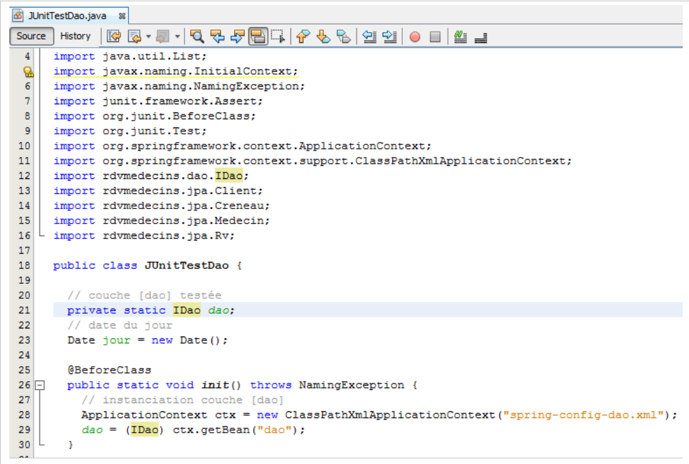 |
- ligne 21 : le type de l'interface est devenu [IDao],
- ligne 28 : instancie tous les beans déclarés dans le fichier [spring-config-dao.xml], notamment celui-ci :
<bean id="dao" class="rdvmedecins.dao.DaoJpa" />
- la ligne 29 demande au contexte Spring de la ligne 28, une référence sur le bean qui a id="dao". On obtient alors une référence sur le singleton [DaoJpa] (class ci-dessus) que Spring a instancié.
Les lignes 28-29 construisent les blocs suivants (pointillés roses) :
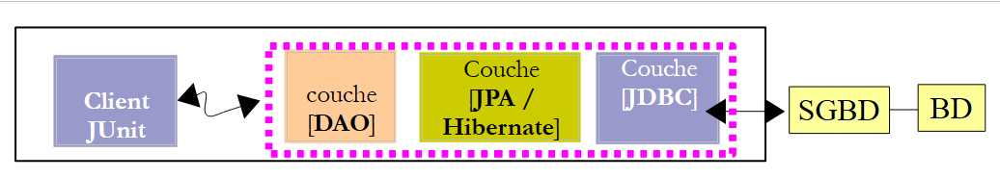 |
Lorsque les tests du client JUnit s'exécutent, la couche [DAO] a été instanciée. On peut donc tester ses méthodes. Notons qu'il n'y a pas besoin de serveur pour faire ce test au contraire du test de l'EJB [DAO] qui avait nécessité le serveur Glassfish. Ici, tout s'exécute dans la même JVM.
On peut maintenant exécuter le test JUnit. Il faut que le serveur MySQL soit lancé. Les résultats sont les suivants :
 |
Le test JUnit a réussi. Examinons les logs du test comme il avait été fait lors du test de l'EJB :
- lignes 1-4 : des logs de Spring,
- lignes 5-10 : des logs d'Hibernate,
- ligne 11 : Spring signale tous les beans qu'il a instanciés. On y retrouve en premier, le bean [dao],
- lignes 12 et suivantes : les logs du test JUnit,
- lignes 60-65 : on voit clairement l'exception provoquée par l'ajout d'un rendez-vous déjà présent dans la base. On rappelle qu'avec l'EJB, on n'avait pas eu cette exception à cause d'un problème de sérialisation.
La couche [dao] est opérationnelle. Nous construisons maintenant la couche [métier].
4.2. La couche [métier]
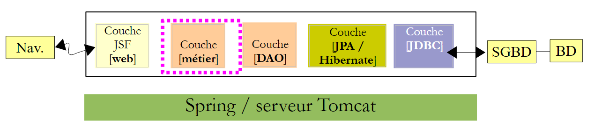 |
Nous procédons de la même façon que pour la couche [DAO], par copier / coller du projet EJB vers le projet Spring.
4.2.1. Le projet Netbeans
Nous construisons un nouveau projet Maven de type [Java Application] nettoyé de tout ce qu'on ne veut pas garder [1] :
 |
4.2.2. Les dépendances du projet
Dans l'architecture :
 |
la couche [métier] s'appuie sur la couche [dao]. Nous ajoutons donc une dépendance sur le projet précédent :
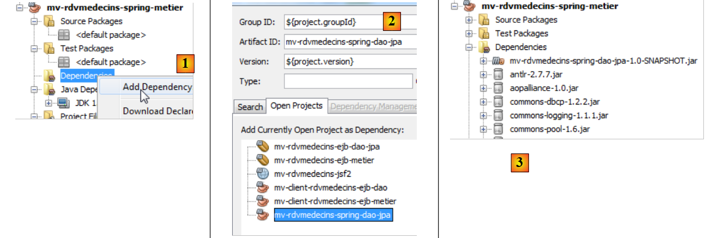 |
- en [1] et [2], on ajoute une dépendance sur le projet de la couche [dao],
- en [3], cette dépendance a amené d'autres dépendances, celles du projet de la couche [dao].
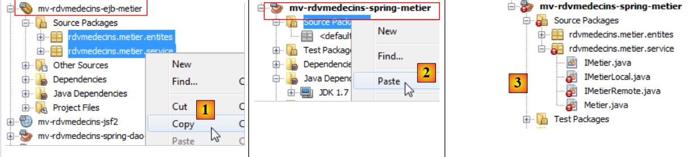 |
- en [1] et [2], on copie les sources Java du projet EJB vers le projet Spring,
- en [3], les sources importés présentent des erreurs dans leur nouvel environnement.
On commence par supprimer les interfaces distante et locale de la couche [métier] qui n'existent plus [4] :
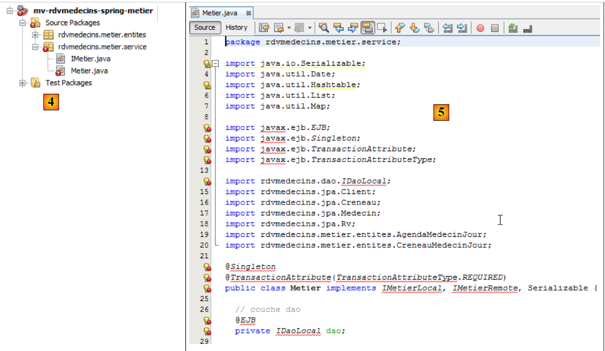 |
- en [5], les erreurs de la classe [Metier] ont plusieurs causes :
- l'utilisation du paquetage [javax.ejb] qui n'existe plus ;
- l'utilisation de l'interface [IDaoLocal] qui n'existe plus ;
- l'utilisation des interfaces [IMetierRemote] et [IMetierLocal] qui n'existent plus.
Nous
- supprimons toutes les lignes erronées liées au paquetage [javax.ejb],
- remplaçons l'interface [IDaoLocal] par l'interface [IDao],
- remplaçons les interfaces [IMetierRemote] et [IMetierLocal] par l'interface [IMetier].
 |
- en [6], la classe ainsi corrigée,
- en [7], il n'y a plus d'erreurs.
Nous avons supprimé les références aux EJB mais il nous faut maintenant retrouver leurs propriétés :
 |
- ligne 22 : on avait un singleton. Cette caractéristique sera obtenue en faisant de la classe un bean géré par Spring,
- ligne 23 : chaque méthode se déroulait dans une transaction. Ce sera obtenu avec l'annotation Spring @Transactional,
- lignes 27-28 : la référence sur la couche [DAO] était obtenue par injection du conteneur EJB. Nous utiliserons une injection Spring.
Le code de la classe [Metier] du projet Spring évolue donc comme suit :
 |
C'est tout pour le code Java. Le reste se passe dans le fichier de configuration de Spring.
4.2.3. Le fichier de configuration de Spring
Nous copions le fichier de configuration de Spring du projet de la couche [DAO] dans le projet de la couche [métier]. Nous commençons par créer la branche [Other Resources] dans le projet de la couche [métier] si elle n'existe pas :
 |
- en [1], dans l'onglet [Files], on crée un sous-dossier au dossier [main],
- en [2], il doit s'appeler [resources],
- en [3], dans l'onglet [Projects], la branche [Other Sources] a été créée.
Nous pouvons passer au copier / coller du fichier de configuration de Spring :
 |
- en [1] on copie le fichier du projet [DAO] dans le projet [métier] [2],
- en [3], le fichier copié.
Le fichier de configuration qui a été copié configure la couche [DAO]. Nous lui ajoutons un bean pour configurer la couche [métier] :
- ligne 2 : le bean de la couche [DAO],
- lignes 3-5 : le bean de la couche [métier],
- ligne 3 : le bean s'appelle métier (attribut id) et est une instance de la classe [rdvmedecins.metier.service.Metier] (attribut class). Ce bean sera instancié comme les autres au démarrage de l'application.
Rappelons le code du bean [rdvmedecins.metier.service.Metier] :
package rdvmedecins.metier.service;
...
public class Metier implements IMetier, Serializable {
// couche dao
private IDao dao;
public Metier() {
}
- ligne 8 : le champ [dao] va être instancié par Spring en même temps que le bean métier. Revenons à la définition de ce bean dans le fichier de configuration de Spring :
- ligne 4 : la balise <property> sert à initialiser des champs du bean instancié. Le nom du champ est donné par l'attribut name. C'est donc le champ dao de la classe [rdvmedecins.metier.service.Metier] qui va être instancié. Il le sera via une méthode setDao qui doit exister. La valeur qui lui sera affectée est celle de l'attribut ref. Cette valeur est ici, la référence du bean dao de la ligne 2.
Dit plus simplement, dans le code :
package rdvmedecins.metier.service;
...
public class Metier implements IMetier, Serializable {
// couche dao
private IDao dao;
public Metier() {
}
Le champ dao de la ligne 19 va être initialisé par Spring avec une référence sur la couche [dao]. C'est ce que nous voulions. Le champ dao sera initialisé par Spring via un setter que nous devons rajouter :
// setter
public void setDao(IDao dao) {
this.dao = dao;
}
Nous renommons le fichier de configuration de Spring pour tenir compte des changements :
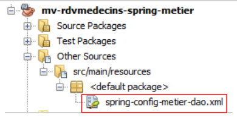 |
Nous sommes désormais prêts pour un test. Nous reprenons le test console utilisé pour tester l'EJB [Metier].
4.2.4. Test de la couche [métier]
Le test se déroulera avec l'architecture suivante :
 |
Nous copions le test console du projet EJB dans le projet Spring :
 |
- en [1] et [2], le copier / coller entre les deux projets,
- en [3], le code importé présente des erreurs.
 |
Le code importé présente deux types d'erreur :
- ligne 13 : l'interface [IMetierRemote] a été remplacée par l'interface [IMetier],
- lignes 24-27 : l'instanciation de la couche [métier] ne se fait plus avec un appel JNDI mais par instanciation des beans du fichier de configuration de Spring.
Nous corrigeons ces deux points :
 |
- ligne 22 : le fichier [spring-config-metier-dao.xml] est exploité. Tous les beans de ce fichier sont alors instanciés. Parmi eux, il y a ceux-ci :
<!-- couches applicatives -->
<bean id="dao" class="rdvmedecins.dao.DaoJpa" />
<bean id="metier" class="rdvmedecins.metier.service.Metier">
<property name="dao" ref="dao"/>
</bean>
Ces deux beans représentent les couches [DAO] et [métier] de l'architecture du test :
 |
Ceci fait, le test peut se dérouler :
 |
Les logs du test sont alors les suivants :
- lignes 1-4 : les logs de Spring et Hibernate,
- ligne 5 : les beans instanciés par Spring. On notera les beans dao et metier,
- lignes 6-53 : les logs du test. Ils sont conformes à ce qui avait été obtenu avec le test du projet EJB. Nous renvoyons le lecteur aux commentaires de ce test (paragraphe 3.5.3).
Nous avons construit la couche [métier]. Nous passons à la dernière couche, la couche [web].
4.3. La couche [web]
 |
Pour construire la couche [web], nous allons procéder de la même façon que pour les deux autres couches, par copier / coller à partir de la couche [web] du projet EJB.
4.3.1. Le projet Netbeans
Nous construisons d'abord un projet web :
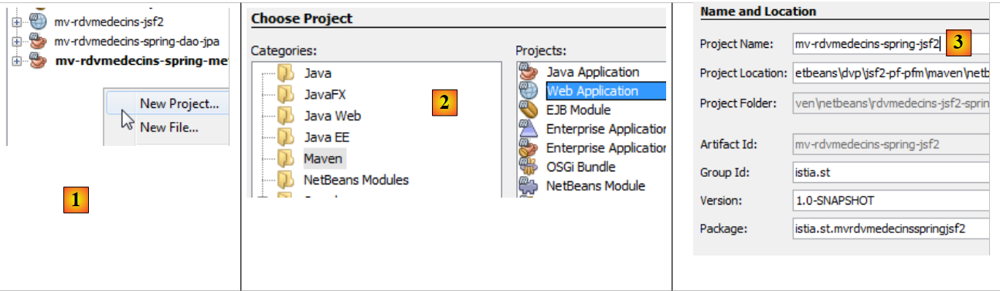 |
- en [1], on crée un nouveau projet,
- en [2], un projet Maven de type [Web Application],
- en [3], on lui donne un nom,
 |
- en [4], on choisit cette fois, le serveur Tomcat et non pas Glassfish qui a servi au projet EJB,
- en [5], le projet obtenu,
- en [6], le projet après la suppression de [index.jsp] et du paquetage de [Source Packages].
4.3.2. Les dépendances du projet
Regardons l'architecture du projet :
 |
La couche [web] a besoin des couches [métier] [DAO] [JPA]. Celles-ci font partie des deux projets que nous venons de construire. D'où une dépendance vers chacun de ces projets :
 |
- en [1], nous ajoutons la dépendance sur le projet Spring / métier,
- en [2], le projet Spring / métier a été ajouté. Comme il avait lui-même une dépendance sur le projet Spring / DAO / JPA, celui a été automatiquement ajouté dans les dépendances [3].
Revenons à la structure de notre application :
 |
La couche web est une couche JSF. Il nous faut donc les bibliothèques de Java Server Faces. Le serveur Tomcat ne les a pas. La dépendance ne sera donc pas de portée (scope) [provided] comme elle l'avait été avec le serveur Glassfish mais de portée [compile] qui est la portée par défaut lorsqu'on ne précise pas de portée.
Nous ajoutons ces dépendances directement dans le code de [pom.xml] :
<dependencies>
<dependency>
<groupId>${project.groupId}</groupId>
<artifactId>mv-rdvmedecins-spring-metier</artifactId>
<version>${project.version}</version>
</dependency>
<dependency>
<groupId>com.sun.faces</groupId>
<artifactId>jsf-api</artifactId>
<version>2.1.7</version>
</dependency>
<dependency>
<groupId>com.sun.faces</groupId>
<artifactId>jsf-impl</artifactId>
<version>2.1.7</version>
</dependency>
<dependency>
<groupId>javax</groupId>
<artifactId>javaee-web-api</artifactId>
<version>6.0</version>
<scope>provided</scope>
</dependency>
</dependencies>
- les lignes 7-16 ont été ajoutées au fichier [pom.xml]. Ce sont les dépendances vis à vis de JSF. Ce sont celles utilisées dans le projet EJB / Glassfish. On notera qu'elles n'ont pas la balise <scope>. Elles ont donc par défaut la portée [compile]. La bibliothèque JSF sera donc embarquée dans l'archive [war] du projet web.
Après avoir ajouté ces dépendances au fichier [pom.xml], nous compilons le projet pour qu'elles soient téléchargées.
4.3.3. Portage du projet JSF / Glassfish vers le projet JSF / Tomcat
Nous copions l'intégralité des codes du projet JSF / Glassfish vers le projet JSF / Tomcat :
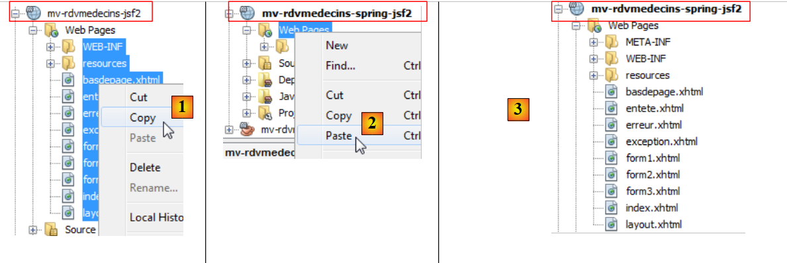 |
- [1, 2, 3] : copie des pages web de l'ancien projet vers le nouveau,
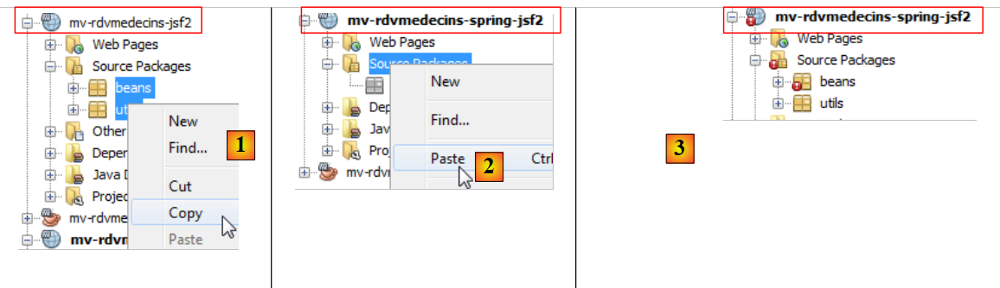 |
- [1, 2, 3] : copie des codes Java de l'ancien projet vers le nouveau. Il y a des erreurs. C'est normal. Nous les corrigerons,
 |
- en [1], dans l'onglet [Files] de Netbeans, on crée un sous-dossier [resources] au dossier [main],
- cela crée dans l'onglet [Projects], la branche [Other Sources] [3],
 |
- [1, 2, 3] : on copie les fichiers de messages de l'ancien projet vers le nouveau projet.
4.3.4. Modifications du projet importé
Nous avons signalé que le code Java importé comportait des erreurs. Examinons les :
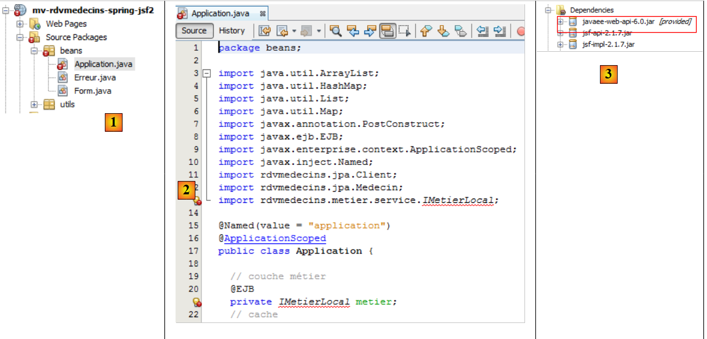 |
- en [1], seul le bean [Application] est erroné,
- en [2], l'erreur est due uniquement à l'interface [IMetierLocal] qui n'existe plus. Ici, on peut être étonnés que la ligne 20 ne soit pas mise en erreur. L'annotation @EJB fait explicitement référence aux EJB et est ici reconnue. Cela est du à la présence de la dépendance [javaee-web-api-6.0] [3]. Java EE 6 a amené avec lui une architecture qui permet de déployer une application web s'appuyant sur des EJB sans interface distante, sur des serveurs n'ayant pas de conteneur EJB. Il suffit que le serveur fournisse la dépendance [javaee-web-api-6.0]. On voit en effet que celle-ci a la portée [provided] [3].
Ici nous n'allons pas utiliser la dépendance [javaee-web-api-6.0]. Nous la supprimons [1] :
 |
 |
Cela amène de nouvelles erreurs [2]. Nous allons commencer par celles du bean [Form] :
 |
- en [1], les lignes erronées sont liée à la perte du paquetage [javax]. Nous les supprimons toutes [2]. Les lignes erronées faisaient de la classe [Form] un bean de portée session (lignes 18-20 de [1]). Par ailleurs, le bean [Application] était injecté ligne 25. Ces informations vont migrer vers le fichier de configuration de JSF [faces-config.xml].
Passons au bean [Application] :
 |
On supprime toutes les lignes erronées de [1] et on change l'interface [IMetierLocal] des lignes 13 et 21 en [IMetier]. En [2], il n'y a plus d'erreurs. En [1], nous avons supprimé les lignes 15-16 qui faisaient de la classe [Application] un bean de portée application. Cette information va migrer vers le fichier de configuration de JSF [faces-config.xml]. Nous avons également supprimé la ligne 20 qui injectait une référence de la couche [métier] dans le bean. Maintenant, celle-ci va être initialisée par Spring. Nous avons déjà le fichier de configuration nécessaire, c'est celui du projet Spring / Métier. Nous le copions :
 |
- en [1, 2], nous copions le fichier de configuration de Spring du projet Spring / Métier vers le projet Spring / JSF,
 |
En [3], le résultat.
Dans le bean [Application], il faut exploiter ce fichier de configuration pour avoir une référence sur la couche [métier]. Cela se fait dans sa méthode [init] :
package beans;
...
import org.springframework.context.ApplicationContext;
import org.springframework.context.support.ClassPathXmlApplicationContext;
public class Application {
// couche métier
private IMetier metier;
...
public Application() {
}
@PostConstruct
public void init() {
try {
// instanciation couche [métier]
ApplicationContext ctx = new ClassPathXmlApplicationContext("spring-config-metier-dao.xml");
metier = (IMetier) ctx.getBean("metier");
// on met les médecins et les clients en cache
...
} catch (Throwable th) {
...
}
...
}
- ligne 20 : les beans du fichier de configuration de Spring sont instanciés,
- ligne 21 : on demande une référence sur le bean metier donc sur la couche [métier].
De façon générale, l'instanciation des beans de Spring est à faire dans la méthode init du bean de portée application. Il existe une autre méthode où l'instanciation des beans est faite par une servlet de Spring. Cela implique de changer le fichier [web.xml] et d'ajouter une dépendance sur l'artifact [spring-web]. Nous ne l'avons pas fait ici pour rester en ligne avec ce qui avait été utilisé dans les codes précédents.
Nous avons supprimé les annotations dans les classes [Application] et [Form] qui en faisaient des beans JSF. Ces classes doivent rester des beans JSF. Au lieu des annotations, on utilise alors le fichier de configuration de JSF [WEB-INF / faces.config.xml] pour déclarer les beans.
 |
Ce fichier est désormais le suivant :
<?xml version='1.0' encoding='UTF-8'?>
<!-- =========== FULL CONFIGURATION FILE ================================== -->
<faces-config version="2.0"
xmlns="http://java.sun.com/xml/ns/javaee"
xmlns:xsi="http://www.w3.org/2001/XMLSchema-instance"
xsi:schemaLocation="http://java.sun.com/xml/ns/javaee http://java.sun.com/xml/ns/javaee/web-facesconfig_2_0.xsd">
<application>
<!-- le fichier des messages -->
<resource-bundle>
<base-name>
messages
</base-name>
<var>msg</var>
</resource-bundle>
<message-bundle>messages</message-bundle>
</application>
<!-- le bean applicationBean -->
<managed-bean>
<managed-bean-name>applicationBean</managed-bean-name>
<managed-bean-class>beans.Application</managed-bean-class>
<managed-bean-scope>application</managed-bean-scope>
</managed-bean>
<!-- le bean form -->
<managed-bean>
<managed-bean-name>form</managed-bean-name>
<managed-bean-class>beans.Form</managed-bean-class>
<managed-bean-scope>session</managed-bean-scope>
<managed-property>
<property-name>application</property-name>
<value>#{applicationBean}</value>
</managed-property>
</managed-bean>
</faces-config>
- les lignes 10-19 configurent le fichier des messages. C'était la seule configuration qu'on avait dans le projet JSF / EJB,
- les lignes 21-35 déclarent les beans de l'application JSF. C'était la méthode standard avec JSF 1.x. JSF 2 a introduit les annotations mais la méthode de JSF 1.x est toujours supportée,
- lignes 21-25 : déclarent le bean applicationBean,
- ligne 22 : le nom du bean. On pourrait être tenté par le nom application. A éviter car c'est le nom d'un bean prédéfini de JSF,
- ligne 23 : le nom complet de la classe du bean,
- ligne 24 : sa portée,
- lignes 27-35 : définissent le bean form,
- ligne 28 : le nom du bean,
- ligne 29 : le nom complet de la classe du bean,
- ligne 30 : sa portée,
- lignes 31-34 : définissent une propriété de la classe [beans.Form],
- ligne 32 : nom de la propriété. La classe [beans.Form] doit avoir un champ avec ce nom et le setter qui va avec,
- ligne 33 : la valeur du champ. Ici c'est la référence au bean applicationBean défini ligne 21. On opère donc là, l'injection du bean de portée application dans le bean de portée session afin que celui-ci ait accès aux données de portée application.
Nous avons dit plus haut que le champ [application] du bean [beans.Form] allait être initialisé via un setter. Il faut alors le rajouter à la classe [beans.Form] s'il n'existe pas déjà :
public void setApplication(Application application) {
this.application = application;
}
4.3.5. Test de l'application
Notre application est désormais sans erreur et prête pour les tests :
 |
- en [1], le projet corrigé,
- en [2], on le construit,
- en [3], on l'exécute. Il faut que le SGBD MySQL soit lancé. Le serveur Tomcat va alors être lancé [4] s'il ne l'était pas, puis la page d'accueil de l'application va être affichée [5] :
 |
A partir de là, on retrouve l'application étudiée. Nous laissons le lecteur vérifier qu'elle fonctionne. Maintenant arrêtons l'application :
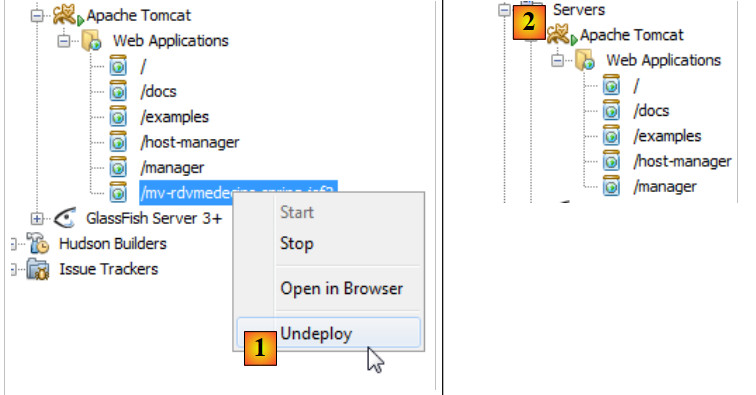 |
- en [1], on décharge l'application,
- en [2], elle n'est plus là.
Regardons maintenant les logs de Tomcat :
Les lignes 2 et 4 signalent un dysfonctionnement à l'arrêt de l'application. La ligne 4 indique qu'il y a un risque probable de fuite mémoire. Effectivement, celui-ci a lieu et au bout d'un moment Netbeans n'est plus utilisable. Ce problème est particulièrement irritant car il faut alors relancer Netbeans à chaque nouvelle exécution du projet. Ce problème a été déjà rencontré dans le document " Introduction à Struts 2 par l'exemple " [http://tahe.developpez.com/java/struts2].
On trouve sur internet beaucoup d'informations sur cette erreur. Elle apparaît lorsqu'on charge / décharge de Tomcat une application de façon répétée. On obtient au bout d'un moment l'erreur java.lang.OutOfMemoryError: PermGen space. Il apparaît qu'il n'y a pas de solution pour éviter cette erreur lorsque celle-ci provient d'archives tierces (jar) comme c'est le cas ici. Il faut alors relancer Tomcat pour la faire disparaître.
On peut cependant retarder la survenue de cette erreur. Premièrement, on augmente l'espace de la mémoire qui a débordé.
 |
- en [1], on va dans les propriétés du serveur Tomcat,
- en [2], dans l'onglet [Platform], on fixe la valeur de la mémoire qui déborde. Ici, on a mis 1 Go parce qu'on avait une mémoire totale de 8 Go. On pourra mettre 512M (512 mégaoctets) avec une mémoire plus petite.
Ensuite, on met le pilote JDBC de MySQL dans <tomcat>/lib où <tomcat> est le répertoire d'installation de Tomcat.
 |
- en [1], dans les propriétés de Tomcat, on note son répertoire d'installation <tomcat>,
- dans <tomcat>/lib [2], on place un pilote JDBC récent de MySQL [3].
Ensuite, on enlève la dépendance qu'avait le projet sur le pilote JDBC de MySQL [4].
 |
Ceci fait, on teste l'application. On constate qu'on peut faire des chargements / déchargements répétés de l'application. Les problèmes de fuite mémoire ne sont cependant pas résolus. Ils interviennent simplement plus tard.
4.4. Conclusion
Nous avons porté l'application JSF / EJB / Glassfish vers un environnement JSF / Spring / Tomcat. Cela s'est fait essentiellement par du copier / coller entre les deux projets. Cela a été possible parce que les technologies Spring et EJB3 présentent de fortes similarités. EJB3 a été en effet créé après que Spring se soit montré plus performant que les EJB2. EJB3 a alors repris les bonnes idées de Spring.
4.5. Les tests avec Eclipse
 |
- en [1], on importe les trois projets Spring,
- en [2], on sélectionne le test JUnit de la couche [DAO] et on l'exécute en [3],
 |
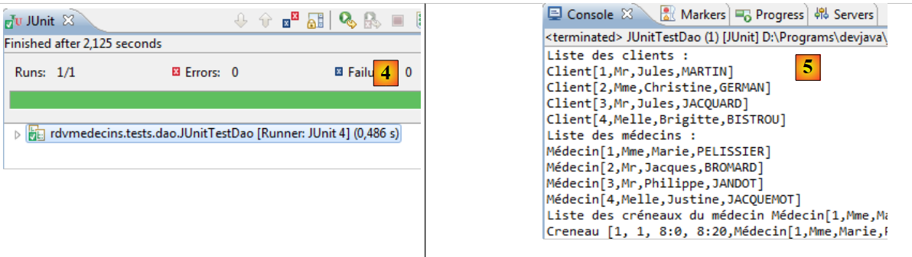 |
- en [4], le test est réussi,
- en [5], les logs de la console.
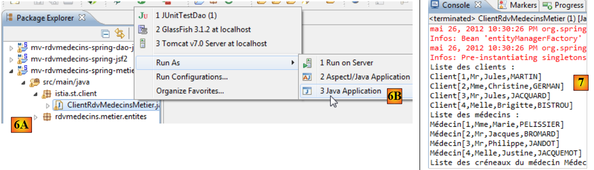 |
- en [6A] [6B], on exécute le client console de la couche [métier],
- en [7], l'affichage console obtenu,
 |
- en [8] [9], on exécute le projet web sur un serveur Tomcat 7 [10],
 |
- en [11], la page d'accueil de l'application est affichée dans le navigateur interne d'Eclipse.